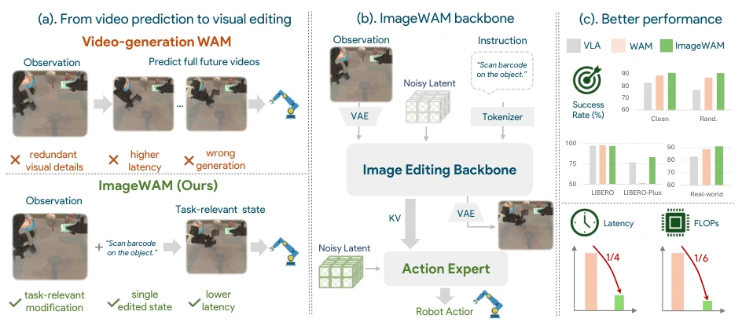
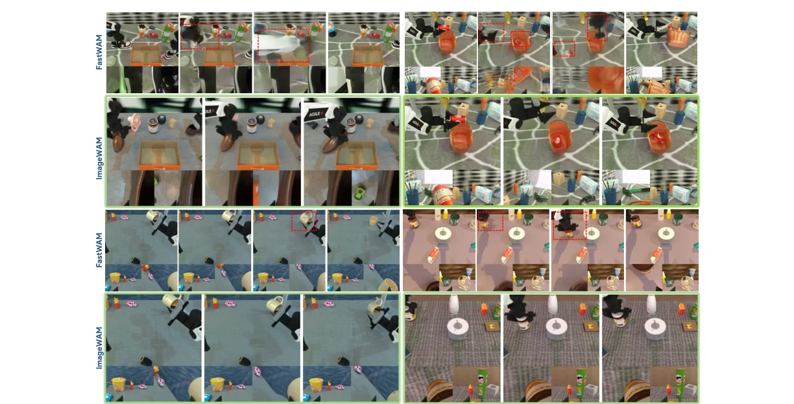
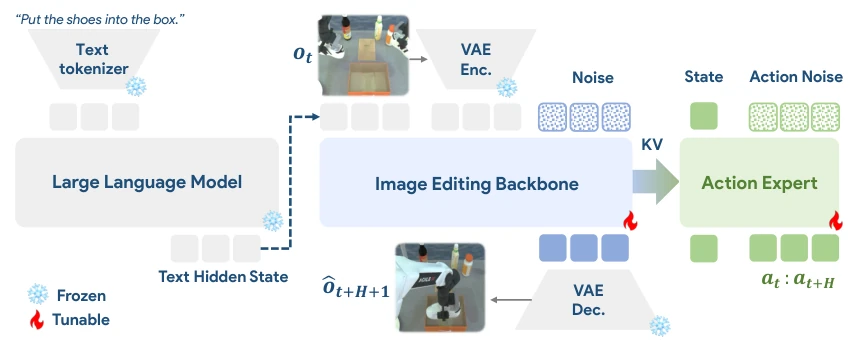
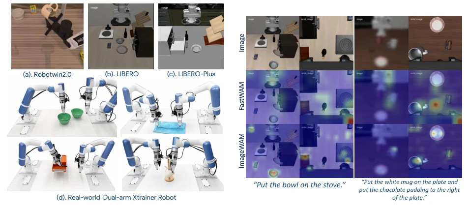

Video generation-based WAM is akin to using a cannon to kill a mosquito, suffering from severe computational waste and absurdly high inference latency. ImageWAM's strategy of "image substitution for video" is ingenious, utilizing the KV Cache of pre-trained image editing models as intermediate states of the world model, thereby bypassing the complexities of video decoding. However, can single-frame prediction truly cover long horizons? While the authors do not explicitly clarify this, the efficiency gains are indeed significant, with FLOPs reduced to 1/6 and latency to 1/4. Nevertheless, it relies on the quality of the editing model; if the editing model itself suffers from hallucinations, the robot will inevitably be misled accordingly. Furthermore, without additional pre-training and relying solely on downstream fine-tuning, this cost-effectiveness is quite rare in academia, though generalization capabilities still require observation.
Existing WAM relies on video generation [13]; however, video prediction necessitates processing a vast number of spatiotemporal tokens, leading to high inference costs and a tendency to generate background details irrelevant to actions. Long-horizon imagination further introduces errors that may mislead policies [3]. The core of robot control lies in "instruction-guided visual change" rather than realistic future videos. ImageWAM highlights that image editing models naturally align with "instruction-change", enabling focus on task-relevant regions while avoiding the redundant computation and hallucination risks associated with video generation. Although WAM should theoretically outperform VLA, video generation has become a bottleneck, resulting in inference latency that struggles to satisfy real-time control demands.

Figure 1 Previous video-generation WAMs instantiate world-action reasoning by predicting dense future video tokens, which can be computationally expensive and may allocate capacity to action-irrelevant visual details. ImageWAM replaces future video prediction with an image editing backbone that reasons over a source-grounded, instruction- guided visual transformation. The resulting edit-aware representation serves as a compact world-action intermediate for action prediction, achieving strong policy performance while reducing inference cost.

Figure 5 Future-video artifacts can mislead action prediction. The video-WAM baseline generates distorted future observations around task-relevant objects, leading to an unreliable action-conditioning context and task failure. Im- ageWAM avoids dense imagination and instead conditions the action expert on compact image-editing caches.
The framework is built upon a pre-trained image editing model (e.g., Flux.2). Given observations and instructions, the editing backbone network performs denoising but does not decode the final image; instead, it extracts KV caches from intermediate layers. The Action Expert leverages Flow Matching to predict action blocks conditioned on these caches. During training, image editing loss and action flow matching loss are jointly optimized. During inference, only a single-step forward pass is required to retrieve the cache, eliminating the need to generate multi-frame videos and significantly reducing latency. The VLM component is frozen, with only the diffusion branch and action expert trained to ensure stable language understanding. Specifically, ImageWAM does not aim to generate visually aesthetic edited images but rather exploits intermediate features from the editing process. In the training phase, denoising timesteps $\tau$ are randomly sampled, and KV caches $C_{edit}^\tau$ are collected from each layer. The Action Expert integrates these caches via a joint attention mechanism to predict the action sequence. This design preserves the WAM principle of "imagine then act", yet compresses "imagination" from dense video tokens into a compact editing context, thereby avoiding the computational overhead associated with video decoding.

Figure 2 ImageWAM Pipeline. Given a language instruction and the current observation ot, the image editing backbone synthesizes the future frame ˆot+H+1. The Action Expert integrates the intermediate KV features from this generation process via joint attention, predicting a sequence of future actions at:t+H conditioned on the current robot state and action noise.
Evaluated on RoboTwin 2.0, LIBERO, and real robots. Compared to VLA baselines (e.g., pi0), ImageWAM achieves higher success rates; compared to WAM methods (e.g., FastWAM), performance is comparable while latency is reduced to 263ms (from original 1081ms). The average success rate on RoboTwin is 93.56%, and on real tasks it is 84.5%. Ablation studies indicate Flux.2 yields the best results, with larger models enhancing robustness. Attention maps demonstrate that editing caches focus on task-relevant regions, validating the effectiveness of the editing context. Compared to unified understanding-generation models, the decoupled design avoids capability interference, demonstrating the feasibility of image editing as the backbone for WAM.

Figure 3 Experiments setup on Robotwin2.0, LIBERO, LIBERO-Plus and real-world robot.